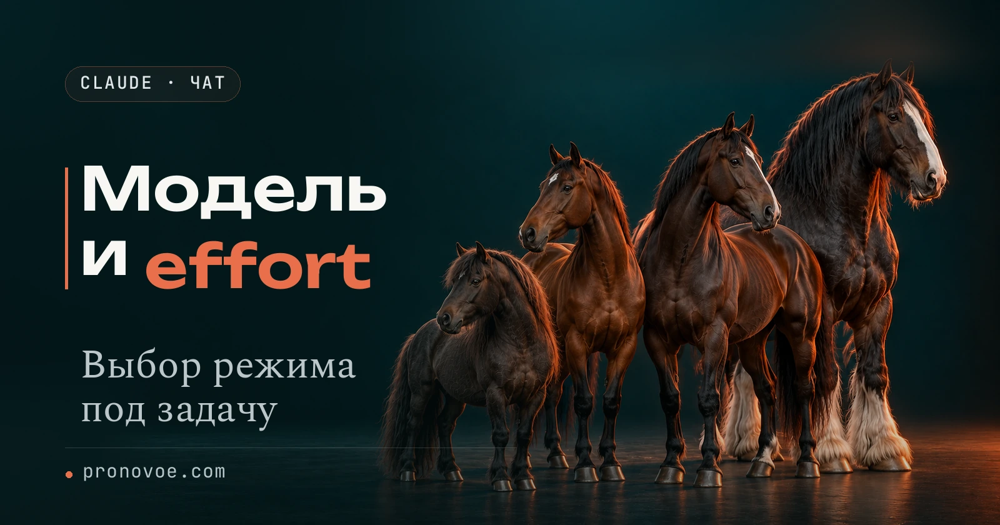
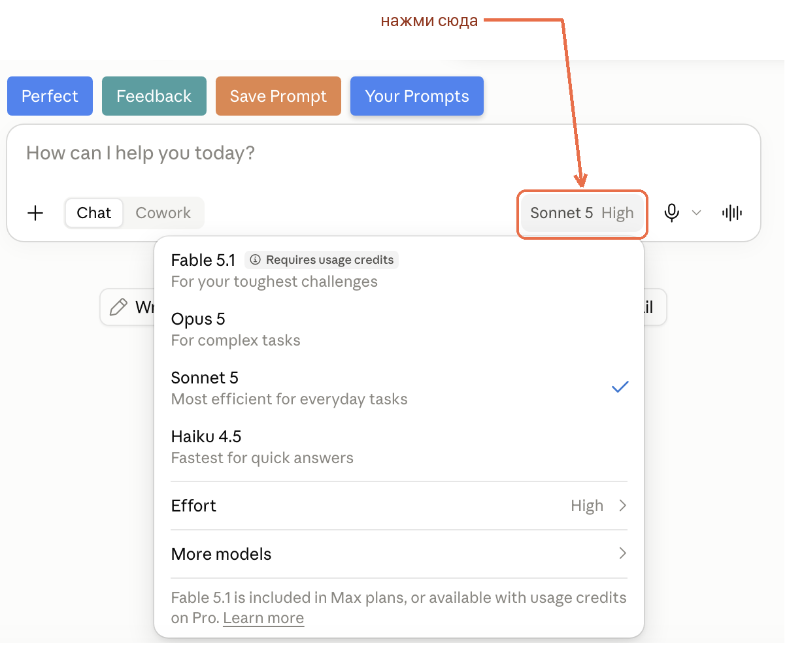
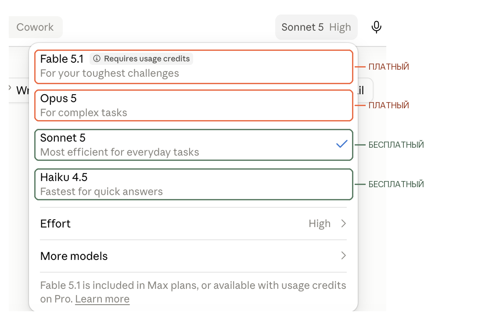
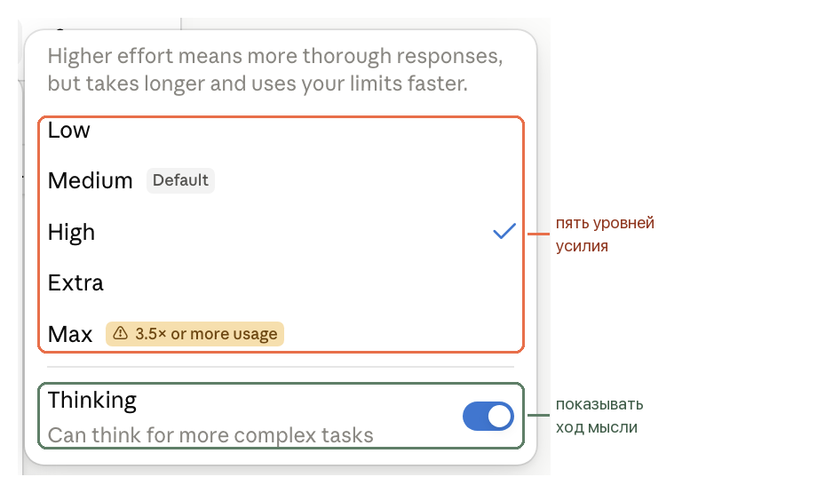

Claude.ai · выбор модели

Модель и уровень effort: что включать под задачу
Начальный уровень
В Claude есть несколько моделей, и рядом с ними отдельная настройка effort. Обе управляют одним: сколько сил Claude потратит на твой ответ. Слишком слабая связка даст поверхностный результат, слишком сильная - съест лимит на пустяковой задаче. По таблице ниже выберешь сочетание под свою работу.
Если вход в Claude ещё не настроен, начни с инструкции «Как подключить Claude из России». А чтобы Claude знал, кто ты и как тебе отвечать, пройди «Как рассказать Claude о себе»
Где находится настройка
Модель
Задача написана, Claude ответил, но ответ не устроил: то слишком коротко, то слишком долго. Чаще всего работу делала не та модель, а её переключатель новичок ищет в настройках, где его нет
Модель выбирается не один раз в настройках, а прямо в чате. Ты можешь менять её под каждую задачу и даже посреди разговора
Где переключить модель
Открой любой чат и посмотри вниз, на строку ввода. Справа, рядом с микрофоном, написано название текущей модели и уровень усилия - например Sonnet 5 High. Нажми на эту надпись, и прямо над ней раскроется список моделей

Вот тот же список крупно, с пометками тарифов

Одно меню - три настройки: в нём выбирается модель, уровень Effort и переключатель thinking. Это разные настройки, и их можно сочетать в любой комбинации
Результат: ты знаешь, где переключать модель, и можешь делать это в любой момент разговора
Кому какую работу поручить
Таблица выбора модели
Модели идут от самой быстрой к самой основательной. Чем сильнее модель, тем глубже она думает, но тем больше расходует твой лимит. Смысл выбора в том, чтобы не брать тяжёлую модель на лёгкую работу
| Модель | Для чего | Пример задачи |
|---|---|---|
| Haiku Есть на Free |
Быстрые ответы, короткие пересказы и простое извлечение данных - то, что нужно получить мгновенно | Пересказать письмо в трёх строках, вытащить даты из текста, разложить список по категориям |
| Sonnet Есть на Free |
Универсальная рабочая модель: код, тексты, анализ и задачи в несколько шагов. Подходит для большинства дел | Написать пост, разобрать ошибку в коде, собрать план запуска, проанализировать таблицу |
| Opus Платные тарифы |
Глубокое исследование и сложные рассуждения, где действительно нужно долго думать | Сравнить варианты и выбрать стратегию, разобрать запутанную задачу, с которой не справился Sonnet |
| Fable Платные тарифы |
Самые крупные и важные проекты: длинные сложные задачи, которые Claude ведёт сам, реже спрашивая тебя | Длинный проект из множества связанных шагов, работа с большим объёмом материалов |
Названия моделей со временем получают номера версий - например Sonnet 5, Haiku 4.5, Opus 5. Логика выбора от этого не меняется: смотри на само имя модели
Результат: ты понимаешь, какую модель брать под конкретную задачу, а не выбираешь наугад
Бесплатный тариф
Что доступно на бесплатном тарифе
Это первое, обо что спотыкается новичок: он читает про Opus, открывает меню и не находит его у себя. Дело не в ошибке, а в тарифе
На бесплатном тарифе доступны Haiku и Sonnet. Opus и Fable открываются только на платных тарифах
Кадр выше снят на платном тарифе - поэтому в нём видны все четыре модели. На бесплатном в этом же меню остаются только Sonnet и Haiku
Про Fable интерфейс говорит отдельно: Fable 5.1 is included in Max plans, or available with usage credits on Pro - то есть Fable входит в тариф Max, а на Pro доступен за отдельные кредиты
Если в меню видно только две модели - у тебя бесплатный тариф, и это нормально. Sonnet тянет большинство обычных задач: тексты, разбор, планы, простой код
Как считается лимит: пятичасовое окно
Ты упёрся в лимит посреди работы и прикидываешь, что теперь ждать до завтра. Ждать почти наверняка придётся меньше
Лимит в Claude не привязан к календарным суткам. Он обновляется по пятичасовым окнам, но Anthropic не указывает, что конкретное окно обязательно начинается с твоего первого сообщения
После долгого перерыва Claude показывает, сколько осталось до обновления в текущем 5-часовом окне
Что это значит на практике: ориентируйся на время обновления лимита, которое показывает сам Claude, а не высчитывай с момента входа в сессию
Чем тяжелее модель и выше effort, тем быстрее расходуется окно. Поэтому Haiku и низкий effort на мелких задачах - это не экономия ради экономии, а способ сохранить лимит на то, что действительно важно
На платных тарифах поверх пятичасовых окон действует ещё и недельный потолок
Результат: ты понимаешь, почему в твоём меню именно такой набор моделей
Глубина размышления
Effort
Модель подходящая, а ответ всё равно вышел поверхностным. Или наоборот: Claude думает над ерундой минуту и жжёт лимит. Рядом с моделью лежит вторая настройка, про которую новичок обычно не знает
Что такое effort
Называется она effort и задаёт, насколько тщательно Claude обрабатывает каждый твой запрос
Работает это так: чем выше уровень, тем подробнее и продуманнее ответ, но тем дольше он готовится и тем больше расходуется лимит. Поэтому effort снижают на рутине и поднимают на сложном
Уровни effort
Открой меню модели и нажми Effort. Уровни идут от самого лёгкого к самому глубокому

| Low | Самый быстрый уровень. Признак выбора: ответ известен заранее и его надо просто оформить - перевод, список, короткая выжимка |
|---|---|
| Medium ярлык Default на кадре | Признак выбора: ответ надо собрать из нескольких кусков, но перебирать варианты не нужно - обычное письмо, правка текста, разбор короткой таблицы. Пара Low и Medium расходует лимит медленнее старших уровней |
| High | Лучший баланс качества и скорости. Хороший выбор, когда задача важная |
| Extra | Глубже, чем High. Для длинных задач, которые Claude ведёт долго и без частых подсказок |
| Max | Самый тщательный режим. Интерфейс предупреждает: расход лимита минимум в 3,5 раза выше обычного |
Результат: ты можешь осознанно поднять или опустить уровень, а не оставлять всё как есть
Отдельный переключатель thinking
В том же меню, под уровнями effort, есть переключатель Thinking с подписью Can think for more complex tasks - может думать над более сложными задачами. Он не то же самое, что effort. Effort задаёт глубину каждого ответа, а thinking показывает ход рассуждения: над ответом появляется раскрывающийся блок, в котором видно, как Claude шёл к результату
Эти две настройки независимы, и включать их можно в любом сочетании. На сложной задаче есть смысл поднять effort, включить thinking или сделать и то и другое
Результат: ты различаешь глубину ответа и показ рассуждения и не путаешь одно с другим
Как этим пользоваться
Простое правило на каждый день
Не нужно каждый раз выбирать заново. Достаточно одного правила, к которому возвращаешься, когда ответ не устроил
Порядок действий
- Обычная работа: Sonnet и уровень Medium или High
- Мелочь и однотипные действия: Haiku или effort ниже
- Ответ вышел поверхностным: подними effort на той же модели
- Не помогло: возьми модель сильнее, если она есть на твоём тарифе
- Хочешь видеть ход мысли: включи thinking
Частая ошибка новичка: всегда держать самую сильную модель и максимальный effort. Лимит уходит на пустяки, а на настоящую задачу его уже не хватает
Результат: ты тратишь лимит там, где он действительно нужен
Официальные материалы
Источники
Модель подобрана. А если задач десять?
Что можно делать с нейросетями, если не знаешь кода?
Чтобы почувствовать размах, посмотри Концентрат Ивана Сергеева. ИИ-агенты на твоих глазах собирают продукт, контент, сайты и воронки без кода. Это основа под любую цель: свои услуги, партнёрка, чужой бизнес. Три дня бесплатно, VIP с четвёртым днём - 990 ₽
Забрать КонцентратУже знаешь, чего хочешь? Тогда в мастер-группу Ивана: система продаж на ИИ без продюсера и технаря, сопровождение и сообщество
Заполнить анкету предзаписиНабор открывается редко, кто записался заранее, получает лучшую цену и бонусы. Платить сейчас не нужно
Реклама. ИП Сергеев И. С., ИНН 352511695540. erid: 2Vtzqvk2p6q